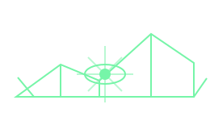
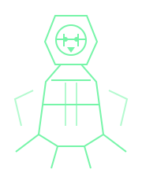

Tactical CogitatorNexus link: awaiting pairing
Tomb World Dashboard
Broadcast: Local Command Node
- Link
- Offline
- Latency
- —
- Session
- 00:00:00
- Identifier
- —— ——
Return Cogitator Response
Scan this code once with the game device, or copy and paste the response there.
Threat Level
—UnavailableGrade Level
—UnavailablePlayer Ready
— / —No roster dataNPO Ready
— / —No roster dataBattle Status
StandbyAwaiting first snapshotMission unavailable

Waiting for the first game-state snapshot.
Objective Progress—
Secondary Objectives
- No objective data received
No Current Activation

Unit —Awaiting operative dataOrder unavailable
- Wounds
- — / —
- APL
- —
- AP Rem.
- —
- Weapon
- Unavailable
No tactical direction
Standing by for activation instructions.
Final tactical data retained.
Active Tomb World Events
- All channels nominalNo active events detected
Recent Activity
- No battle activity recorded
Operative Status
Player Operatives
No roster data
NPO Roster
No roster data
Cogitator Narrative Feed
- Cogitator online. Awaiting tactical relay.